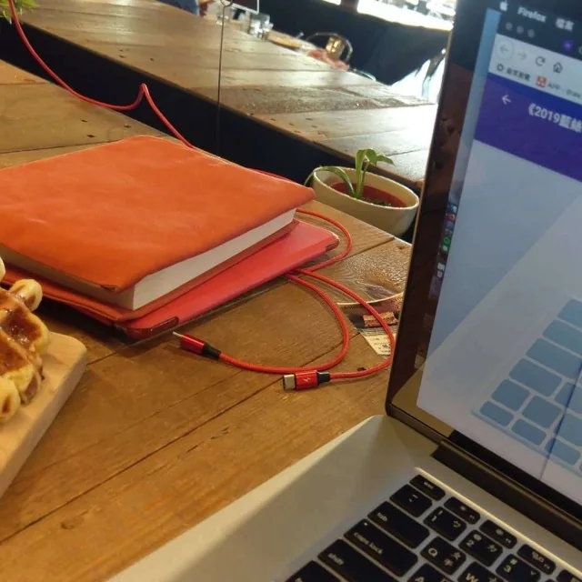

這兩天滑到 Firefox 最新的 Comeback 廣告，低頭看了一眼自己的螢幕下方，依然維持著雙瀏覽器並排開啟的習慣。原來不知不覺，這樣切換著視窗的日子也過了二十年。
這兩天滑到 Firefox 最新的 Comeback 廣告，低頭看了一眼自己的螢幕下方，依然維持著雙瀏覽器並排開啟的習慣。原來不知不覺，這樣切換著視窗的日子也過了二十年。

把硬碟深處這張 2006 年去信義誠品參加「火狐大轟趴 2.0」的照片翻了出來。當年的簽名板用紅白雙線印著「Firefox 2 Taiwan! 火狐大轟趴 2.0」，黑色奇異筆的字跡裡，右上角有人直接簽上 from books.com.tw，左邊則留著 alickey 與 Boy 的簽名。那時候信義誠品才剛開幕不久，六樓的 The Library 擠了近百號人，大家聚在一起只為了替一個「2.0 版本」的免費開源軟體慶生。
📌 台灣現場註解｜2006「火狐大轟趴 2.0 — Firefox 2 Taiwan!」
為慶祝 2006 年 10 月 24 日 Firefox 2.0 正式釋出，台灣 Mozilla 社群（MozTW）響應全球 FirefoxParty.com 號召，於 2006 年 11 月 12 日（週日）中午 12:30–14:30 在台北信義誠品 6 樓「The Library」舉辦慶祝派對，揭開當年「火狐月」系列活動序幕。現場除了播放全球社群貢獻、專業導演剪輯的 Firefox 2 慶生影片外，由網路插畫家「他踢的」（代號 FoxTWET）繪製的台灣社群專屬吉祥物「狐耳摩莎（Foxmosa）」，正是在這場派對中首度公開亮相。簽名板上來自博客來（books.com.tw）與各地網路人的筆跡，正是台灣 Web 2.0 與部落格黃金年代的現場縮影。
夠資深的網路老人，記憶絕對是從 Netscape 開始算的。在撥接上網還在聽數據機撥接聲的年代，打開 Netscape Navigator，盯著右上角那個深綠色背景的 N 字標誌，看著流星一顆顆劃過天際，等待圖片一格一格往下載入。當年看著網景在瀏覽器大戰裡被微軟免費綑綁的 IE 逼到牆角，誰也沒料到他們最後把原始碼公開釋出的決定，會讓那隻綠色哥吉拉化作灰燼，又在幾年後長出這隻紅狐狸。
📌 背景脈絡｜從 Netscape（網景）到 Firefox 的浴火身世
• 1994 年（Netscape 與代號 Mozilla）：Netscape 推出 Netscape Navigator（網景領航員），1996 年巔峰時期市佔率逾 75%。當時內部開發代號即為「Mozilla」（取自 Mosaic Killer 與 Godzilla 的合體字，早期吉祥物是一隻綠色噴火蜥蜴）。
• 1998 年（開源釋出）：不敵微軟將 Internet Explorer 綑綁進 Windows 的壟斷策略，Netscape 於 1998 年初宣布公開瀏覽器原始碼並成立 Mozilla 組織（同年被 AOL 收購）。
• 2002–2004 年（三度更名誕生 Firefox）：因早期的 Mozilla Suite 套件過於臃腫，開發者 Dave Hyatt 與 Blake Ross 等人於 2002 年 9 月另起爐灶，打造輕量純粹的獨立瀏覽器。最初取名 Phoenix（鳳凰）象徵從網景灰燼中重生，因與 BIOS 大廠商標衝突，於 2003 年 4 月改名 Firebird（火鳥）；又因與開源資料庫專案撞名，最終於 2004 年 2 月 9 日定名為 Mozilla Firefox（英文原意為「小熊貓 Red Panda」的俗稱，但視覺團隊直接以火紅狐狸設計圖示），並在 2004 年 11 月 9 日正式推出 Firefox 1.0。

中間好長一段時間，身邊的人幾乎移居到了 Chrome，只有還維持著雙瀏覽器分工習慣的人，始終在電腦裡留著它的位子。一個用來處理日常工作與相容性測試，另一個則安放自己習慣的擴充套件與使用的節奏。看著二十年前信義誠品那塊簽名板，再對照今年這支找回老迷因的廣告，能一路撐到現在沒變成巨頭的形狀，大概就是老用戶還捨不得關掉它的原因吧。
📌 時代軌跡｜Firefox 近年關鍵大事記（2017–2026）
• 2017.11｜Quantum（量子）大改版：Firefox 57 導入以 Rust 語言開發的 Servo 引擎技術與 Photon 介面，大幅改善記憶體佔用與多核心效能。
• 2019–2021｜隱私防線與 Proton 介面：預設啟用「增強型追蹤保護」與「全面 Cookie 保護（Total Cookie Protection）」，將跨站追蹤隔離於獨立儲存空間。
• 2024｜堅守 Manifest V2 擴充生態：面對 Google Chrome 強推 Manifest V3 限制傳統廣告攔截器（如 uBlock Origin），Firefox 選擇同時支援 MV2 與 MV3，成為進階擴充套件使用者的避風港。
• 2025.07–09｜結束中國大陸在地營運：Mozilla 與北京謀智火狐協商一致，於 2025 年 7 月底宣布關閉中國大陸在地營運與帳號同步服務，大陸官網於 9 月 29 日正式停運。
• 2026.03｜「More Fire. More Fox.」重塑與吉祥物 Kit：攜手設計團隊 JKR 與 Studio Drama 更新品牌視覺，推出史上首隻全球官方吉祥物「Kit」（無嘴火焰狐狸），定調在 AI 與監控時代守護使用者控制權。
• 2026.07｜跨界贊助 Wrexham AFC：宣布成為威爾斯傳奇足球隊雷克斯漢姆（Wrexham AFC）2026/27 賽季球衣胸前主贊助商，以「兩個不向巨頭低頭的挑戰者」呼應獨立品牌精神。
• 2026.09｜Firefox 157「Project Nova」六年最大改版：全面翻新瀏覽器框架、原生整合垂直分頁（Vertical Tabs）與無縫側邊欄，並順應老用戶呼聲正式迎回「緊湊模式（Compact Mode）」。
• 2026.10｜「Comeback to Firefox」復古迷因廣告：聯合創意代理商 We Believers 找回 Tay Zonday、Overly Attached Girlfriend、Annoying Orange、Dancing Matt、Apparently Kid 等 2000 年代初代網路紅人拍攝宣傳片，主打「不靠追蹤你賺錢、沒有強迫推銷的內建 AI」，召喚老用戶回歸純粹的網路體驗。